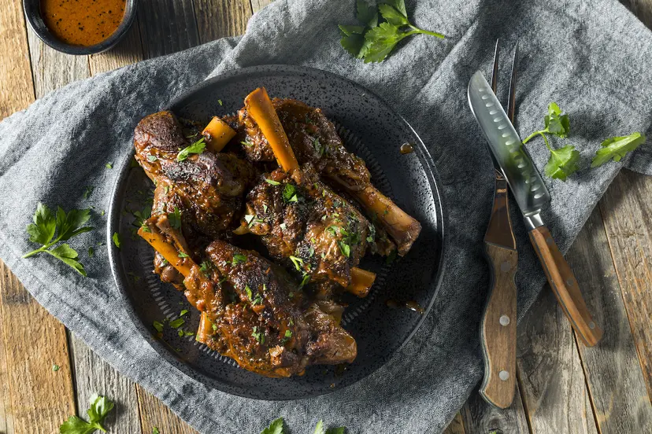

Braised Lamb Shank

Flavorful braised lamb shanks—a hallmark of Easter dinner for some,
and the makings of an above-average Thursday night for others—may require a few hours of patience,
but the results are worth the wait.
Ingredients
- 2 lamb shanks
- Kosher salt and freshly ground black pepper
- 3 tablespoons extra-virgin olive oil
- 1 medium yellow onion, roughly chopped
- 5 cloves garlic, chopped
- 2 large carrots, sliced on the bias
- 2 tablespoons tomato paste
- 1/4 cup red wine (choose a low-tannin wine like merlot)
- 4 cups beef broth (vegetable or chicken broth also work)
- 3 tablespoons apple cider or sherry vinegar
- 2 bay leaves
- 2 fresh rosemary sprigs
Steps
- About 30 minutes before you plan on cooking, remove lamb shanks from the refrigerator
and let temper on the counter. Season with salt and pepper.
- Preheat oven to 325°F.
- On the stovetop, heat oil in a large Dutch oven over medium-high heat.
Sear lamb shanks, aiming for a deep and even golden brown, about 4–5 minutes per side.
Remove, and set aside.
- Lower the heat to medium. Add the onion and sauté until beginning to soften.
Add the garlic, carrots, and tomato paste, and season with salt and pepper.
Cook until aromatic and the tomato paste begins to caramelize, about 1 minute.
Deglaze the Dutch oven with the red wine, stirring with a wooden spoon to loosen all the fond from the seared shanks
on the bottom of the pan.
- Add the beef broth, vinegar, bay leaves, and rosemary then stir to combine.
Taste, and adjust seasoning as necessary. Return the lamb shanks to the pot,
nestling them in the braising liquid so they are completely covered.
- Cover, and transfer pot to the oven. Cook for 2–2 ½ hours, or until meat is falling off the bone
and gives way easily to the tines of a fork.
Credit to MasterClass!